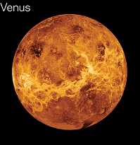

Venus
Click on Venus in the model to learn more!

Earth's Sister
Venus is in many ways Earth's sister planet. It is almost identical in size, chemistry, gravity and density as the Earth. In other words, Venus is made up of almost the exact same types of materials as the Earth and in about the same amounts. However, if they are twins, then Venus is the evil twin; she is the Earth gone wrong, very wrong. There is much we still do not know about how this planet looks and what it is like. However, using special instruments and probes scientists have in recent years unlocked many of the secrets long hidden by this mysterious world. In the 1970s, the Soviet Union actually was able to land more than one probe on the surface of Venus. These scientific probes only lasted a few hours before they were destroyed by the intense heat of the planet.
Atmosphere and Temperature
In the early days of Venus' 4 billion year long life, it would have appeared very similar to the Earth. The two would have been almost identical. However, over a period of a few million years, forces on Venus caused it to take a very different course than the Earth. Venus lies much closer to the Sun than does our planet. That single fact has caused an unstoppable chain of events that doomed Venus to its fiery existence. Owing to its closer proximity to the Sun, Venus' temperature should have been only slightly warmer than that of the Earth. But as the planet warmed, the water evaporated. This increase in water vapor in the atmosphere began a cycle of global warming that could not be stopped. Water vapor is a very effective greenhouse gas. (Greenhouse gas soaks up hot air and prevents it from escaping into space). The increase in water vapor caused the temperature to rise further, which caused more water to evaporate, causing the temperature to climb still further. Today it is likely that all of Venus' water has evaporated into the atmosphere. This atmosphere effectively traps the Sun's energy causing the surface to burn much hotter than it naturally would. The temperatures on Venus can reach almost 900 degrees Fahrenheit (approx 482 degrees Celsius).
Gravity
Because Venus and the Earth are almost the exact same size, you would weigh almost exactly the same on either planet. The gravitational constant on Venus is 8.87 m/s compared to Earth's which is 9.81 m/s.
Moons
Venus does not have any moons.